Beijing's shadow over Saturday's vote: bettors give the China-friendlier KMT 74% to win most races and Taipei's incumbent 62% against a China-sanctioned rival. Polymarket odds; races resolve on official results of the Nov 28 Taiwan local elections. Source: https://polymarket.com/event/2026-taiwanese-local-elections-party-winner
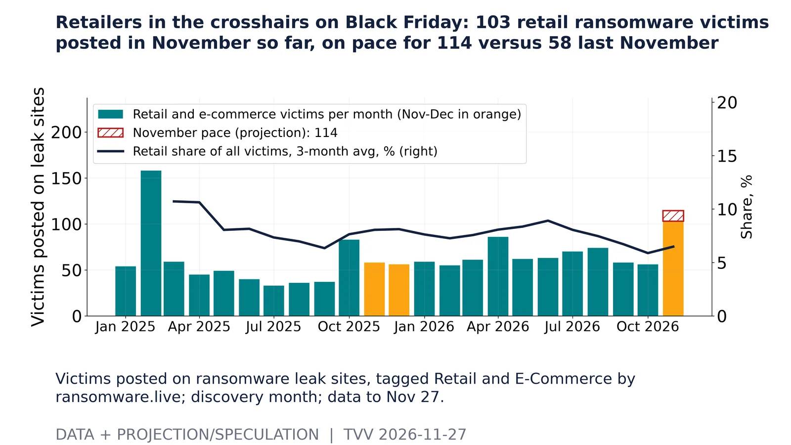
Retailers in the crosshairs on Black Friday: 103 retail ransomware victims posted in November so far, on pace for 114 versus 58 last November. Victims posted on ransomware leak sites, tagged Retail and E-Commerce by ransomware.live; discovery month; data to Nov 27. Source: https://www.ransomware.live/
Aurora odds top out at 7% over North America this morning, with Kp forecast to peak at 4.67: the Thanksgiving lights stay mostly in Canada and Alaska. NOAA SWPC OVATION 30-90 minute aurora forecast (daytime in the US, so not visible now); dots mark reference cities. Source: https://www.swpc.noaa.gov/products/aurora-30-minute-forecast
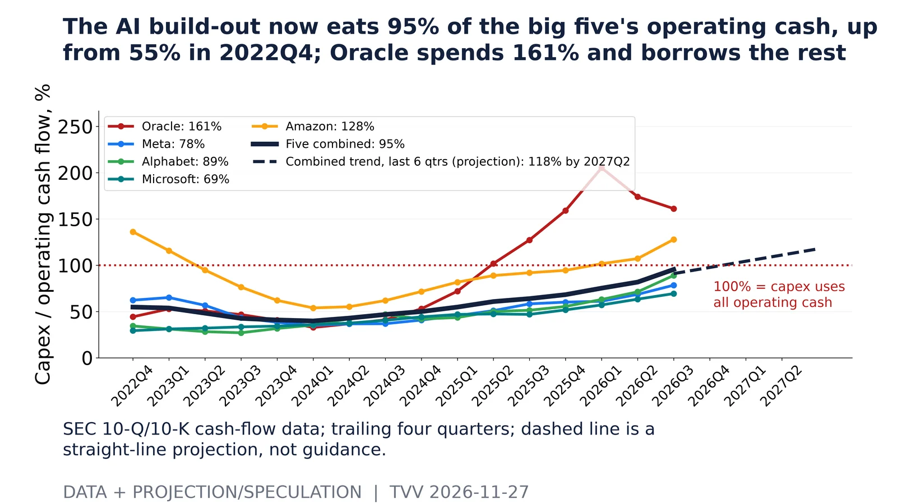
The AI build-out now eats 95% of the big five's operating cash, up from 55% in 2022Q4; Oracle spends 161% and borrows the rest. SEC 10-Q/10-K cash-flow data; trailing four quarters; dashed line is a straight-line projection, not guidance. Source: https://www.sec.gov/edgar/search/
Jobs report Dec 4: bettors' most likely November gain is 75k to 100k (28%), with 47% on 100k or more and 40% on a 4.1% jobless rate. Polymarket odds by bin (left) and unemployment rate (right); October: payrolls +165k, unemployment 4.1%. Source: https://polymarket.com/event/how-many-jobs-added-in-november-2026
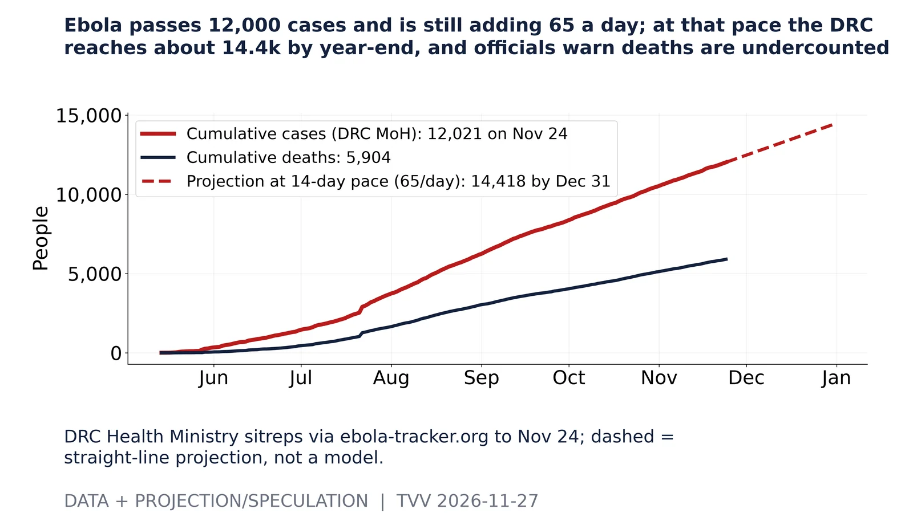
Ebola passes 12,000 cases and is still adding 65 a day; at that pace the DRC reaches about 14.4k by year-end, and officials warn deaths are undercounted. DRC Health Ministry sitreps via ebola-tracker.org to Nov 24; dashed = straight-line projection, not a model. Source: https://ebola-tracker.org/
Silver jumps 9.5% since Wednesday, the 6th-biggest gain since 2000, yet it is still 62% below its 2026 high. Silver futures vs prior settlement; today spans Thanksgiving (no Thursday settlement). Live 10:23 AM ET. Source: https://finance.yahoo.com/quote/SI%3DF/history/
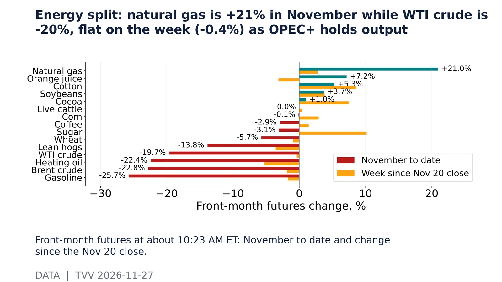
Energy split: natural gas is +21% in November while WTI crude is -20%, flat on the week (-0.4%) as OPEC+ holds output. Front-month futures at about 10:23 AM ET: November to date and change since the Nov 20 close. Source: https://finance.yahoo.com/commodities/
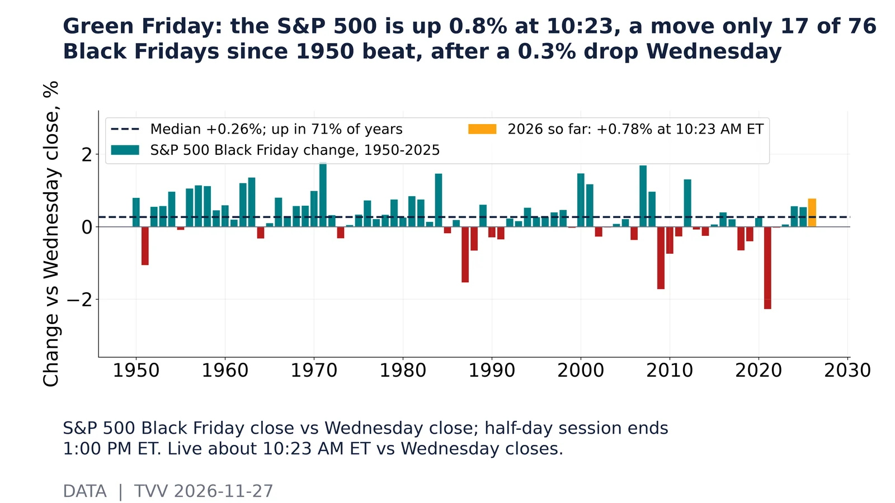
Green Friday: the S&P 500 is up 0.8% at 10:23, a move only 17 of 76 Black Fridays since 1950 beat, after a 0.3% drop Wednesday. S&P 500 Black Friday close vs Wednesday close; half-day session ends 1:00 PM ET. Live about 10:23 AM ET vs Wednesday closes. Source: https://finance.yahoo.com/quote/%5EGSPC/history/
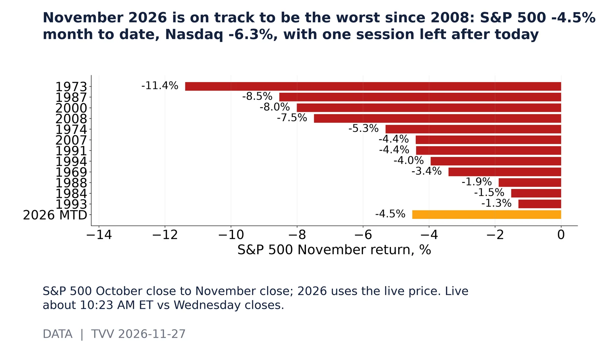
November 2026 is on track to be the worst since 2008: S&P 500 -4.5% month to date, Nasdaq -6.3%, with one session left after today. S&P 500 October close to November close; 2026 uses the live price. Live about 10:23 AM ET vs Wednesday closes. Source: https://finance.yahoo.com/quote/%5EGSPC/history/
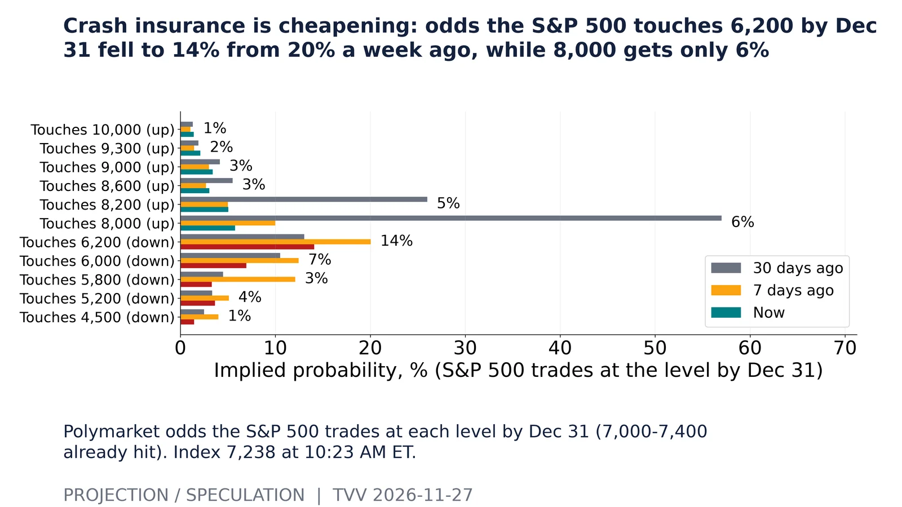
Crash insurance is cheapening: odds the S&P 500 touches 6,200 by Dec 31 fell to 14% from 20% a week ago, while 8,000 gets only 6%. Polymarket odds the S&P 500 trades at each level by Dec 31 (7,000-7,400 already hit). Index 7,238 at 10:23 AM ET. Source: https://polymarket.com/event/spx-hit-dec-2026
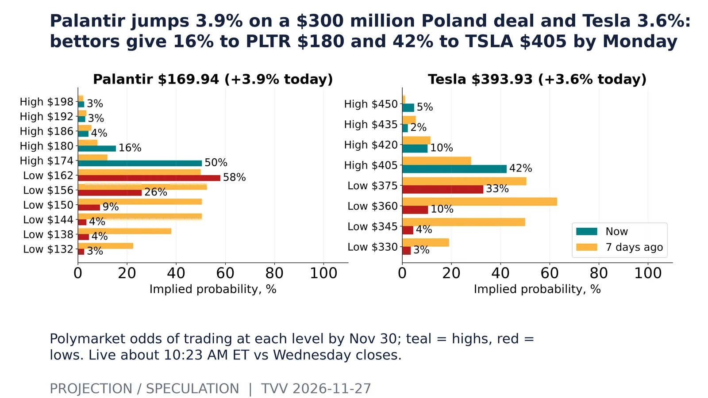
Palantir jumps 3.9% on a $300 million Poland deal and Tesla 3.6%: bettors give 16% to PLTR $180 and 42% to TSLA $405 by Monday. Polymarket odds of trading at each level by Nov 30; teal = highs, red = lows. Live about 10:23 AM ET vs Wednesday closes. Source: https://polymarket.com/event/what-price-will-pltr-hit-in-november-2026
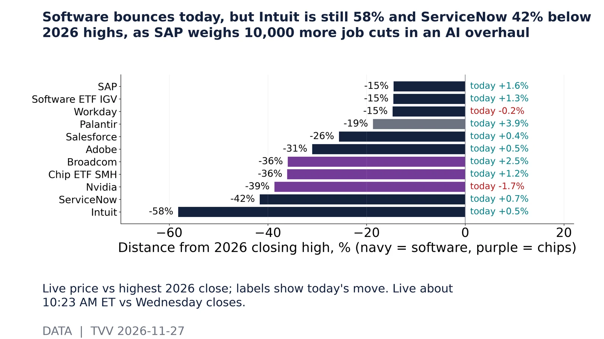
Software bounces today, but Intuit is still 58% and ServiceNow 42% below 2026 highs, as SAP weighs 10,000 more job cuts in an AI overhaul. Live price vs highest 2026 close; labels show today's move. Live about 10:23 AM ET vs Wednesday closes. Source: https://finance.yahoo.com/quote/SAP/history/
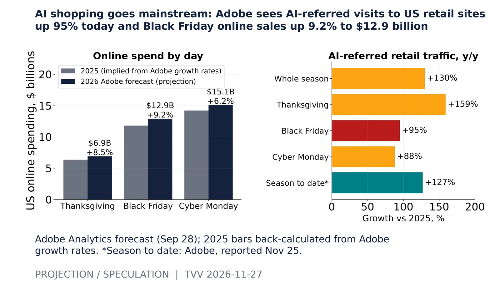
AI shopping goes mainstream: Adobe sees AI-referred visits to US retail sites up 95% today and Black Friday online sales up 9.2% to $12.9 billion. Adobe Analytics forecast (Sep 28); 2025 bars back-calculated from Adobe growth rates. *Season to date: Adobe, reported Nov 25. Source: https://news.adobe.com/news/2026/09/adobe-us-holiday-shopping-season-to-hit-record
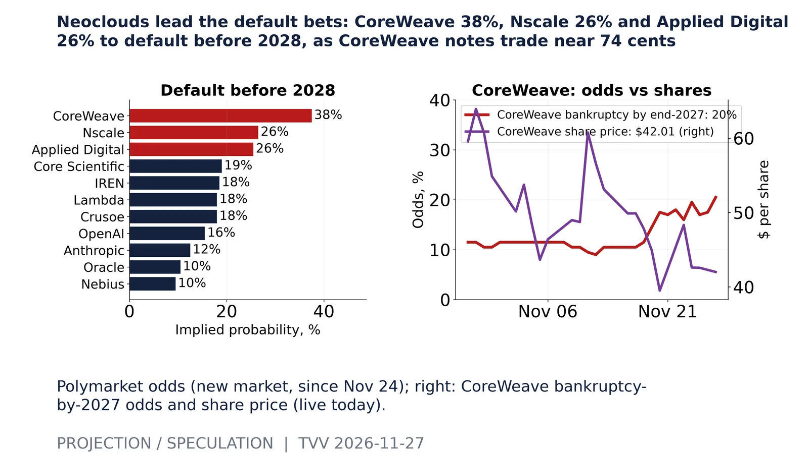
Neoclouds lead the default bets: CoreWeave 38%, Nscale 26% and Applied Digital 26% to default before 2028, as CoreWeave notes trade near 74 cents. Polymarket odds (new market, since Nov 24); right: CoreWeave bankruptcy-by-2027 odds and share price (live today). Source: https://polymarket.com/event/which-ai-companies-default-before-2028-1
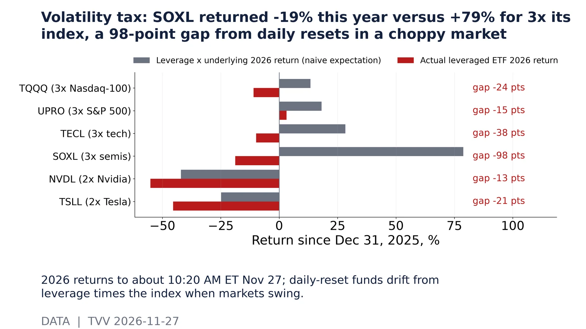
Volatility tax: SOXL returned -19% this year versus +79% for 3x its index, a 98-point gap from daily resets in a choppy market. 2026 returns to about 10:20 AM ET Nov 27; daily-reset funds drift from leverage times the index when markets swing. Source: https://finance.yahoo.com/quote/TQQQ/history/